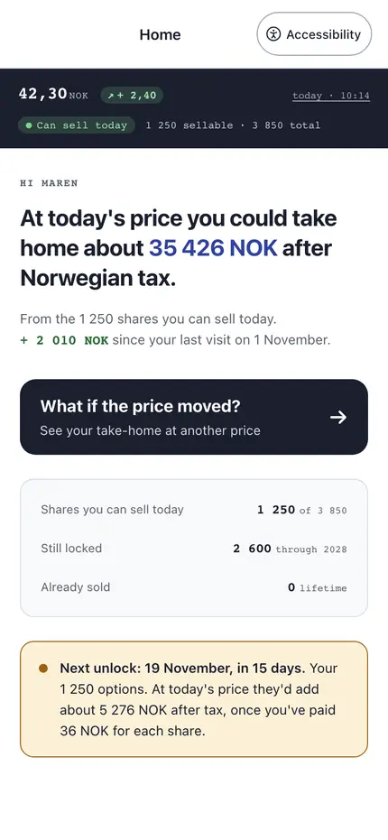
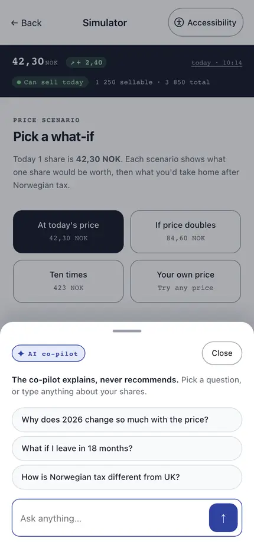

People asked “what would I take home?” The simulator answered something else. So I rebuilt it.
In 2022 I worked on Optio’s share simulator with the team. It was correct, but it answered the wrong question. The new one starts on the phone with one plain sentence: what you’d take home, after tax.
2026, my own rebuild
What would I take home, and can I sell?
Phone first, laptop last
Solo: research, writing, design and build
At today’s price you could take home about 35 426 NOK after Norwegian tax.
A sentence she can repeat to the bank. Example numbers from the prototype.

The old simulator answered a question people weren’t asking.
At Optio, I was one of the designers on this page. You moved a slider to pick a price, like “five times today’s”, and read two totals. It was correct, and honest about being a guess. It was made for someone fluent in finance.

So people found their own ways:
- Screenshotsto compare with next time
- Excelto redo the maths in their own money
- Emails to HRand then waiting for an answer
A simulator that only returns a number isn’t simulating much.
People wanted their own reality, not the programme’s.
I started with what people did when the simulator let them down. One need sat under all the others: your currency, your tax, what actually lands in your bank account.


My research wall: behaviours, clusters, journeys and How Might We. Tap to open full size.
How do I show people their own reality, so they feel informed instead of guessing?
“I don’t want a chart. I want a sentence I can repeat to the bank.”
“Don’t simplify. Just show me the maths clearly.”
“I’m doing this at 11 PM on my phone. Be kind to that.”
“If I have to ask someone what the page shows, you’ve lost me.”
Three rules for every screen
- Lead with what you’d receive.Money after tax, in your currency, first. Fine print last.
- Say what you can do.“Can sell”, “Soon” and “Later” instead of “vested” and “unvested”.
- Show what changed.A small marker on what moved since your last visit, so nobody needs a screenshot.
Three tries, one lesson: show the answer first.
Every early idea made people do something before they saw their own number.

Ask anything
Good answers, but you had to know what to ask before seeing a single number.

Slider first
The old habit, on a smaller screen. Still multiples, not money.

Filters first
Set up three rows of chips, then see something. Too much homework.

One sentence
The chat didn’t disappear. It moved next to the number it explains.
I started on the smallest screen, because that’s where people ask.
Priya checks her shares at night on her phone. A small screen won’t let you put off hard choices: one question per screen, one main button, every number in words.


The phone wireframes. Every screen had to earn its place here first.


First too much. Then too little. Then the middle.
When I cut too hard, today’s price and its source disappeared. The amount became a number nobody could check. And a number you can’t check is a number you don’t trust.


From a slider to a sentence
The old page made you think in multiples of the price. The new one names the choice in words and answers with money.
Words people already use


The co-pilot explains the maths. The decision stays with you.
The maths runs itself
Tax, unlock dates and sale pauses come from your own shares, so no two numbers disagree.
Next to the number
The answer opens the page. The co-pilot waits one tap away: “Why?”
Never “sell now”
It explains, compares and points to a tax advisor. Wrong advice about someone’s money isn’t worth the risk.
Your own shares
“What if I leave?” gets an answer with your numbers.

The accessible way is the only way.
Ola uses VoiceOver. Priya holds the phone in one hand. There’s no special mode, just one version that works for both.
A chart you can hear
Arrow keys read out each year. “Describe this chart” tells the story in one sentence.
Never colour alone
Every status is a dot plus a word: “Can sell”, “Soon”, “Later”.
Made for one thumb
Big buttons, no surprise zoom, and it still works with the phone on its side.
One tap to the meaning
Where a word has to stay, like “sale pause”, its meaning is one tap away.

It works, but no real user has tried it yet.
Next, I’d sit with people like Maren, Daniel, Priya and Ola, including someone who uses VoiceOver, and watch them find their answer. Here’s how I’d know it’s right:
Fewer “can I sell?” emails
People find the answer on the page instead of waiting for HR.
A quick first step
People pick a price or open a row soon after they arrive.
One visit is enough
Nobody asks “did this change since last time?”
What I’d tell myself at the start
Simplify toward the question, not away from the facts
When the price and its source went, the trust went with them.
Words are part of the design
Swapping “blackout” for “sale pause” was one word. It made the rule clear to everyone.
Start small and the big screen gets easy
Every hard choice happened on the phone. The laptop only rearranged pieces that had earned their place.